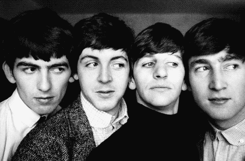

THE BEATLES

Los Beatles fueron una legendaria banda británica de rock formada en Liverpool en 1960, que alcanzó la fama mundial en la década de 1960. Estuvo conformada por John Lennon (guitarra, voz), Paul McCartney (bajo, voz), George Harrison (guitarra, voz), y Ringo Starr (batería, voz). Su influencia cultural y musical fue inmensa, abarcando desde el rock and roll y el pop hasta géneros más experimentales, y su legado continúa hasta hoy, con canciones que definieron una generación y una separación en 1970 que dio paso a exitosas carreras individuales. Tras una serie de cambios de baterista, el grupo invitó a Ringo Starr a unirse en 1962, consolidando la formación clásica.